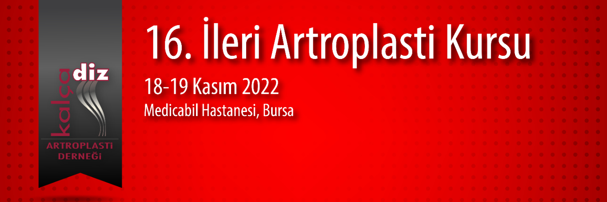

Değerli Meslektaşlarımız,
Kalça Diz Artroplasti Derneği olarak 18-19 Kasım 2022 tarihinde Bursa Medicabil Hastanesi’nde 20. İleri artroplasti kursunu gerçekleştireceğiz. “ Diz Artropastisi” konusunu ileri düzeyde tartışacağımız iki gün sürecek toplantımızda primer vaka, özellikli vaka ve revizyon konularını ileri seviyede ayrıntılı olarak teorik ve canlı cerrahiler zemininde interaktif tartışma imkanı bulacağız. Amacımız, temel artroplasti eğitimi almış olan katılımcılarla ameliyata hazırlık, cerrahi sırasında ve cerrahi sonrasında ki ayrıntıları tartışma imkanı yaratmaktır.
Robotik Primer TDP, özellikli diz protezi ve revizyon ameliyatları canlı olarak ameliyathaneden naklen yayınlanacak, katılımcıların interaktif olarak soruları yanıtlanacak ve tartışılacaktır.
Düzenleyeceğimiz ileri diz artroplastisi kursunda sizleride aramızda görmek bizi mutlu kılacaktır.
Kurs Başkanı: Prof. Dr. İbrahim Azboy
Dernek Başkanı: Prof Dr E. Ertuğrul Şener
Saygı ve sevgilerimizle,
